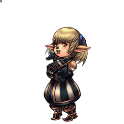
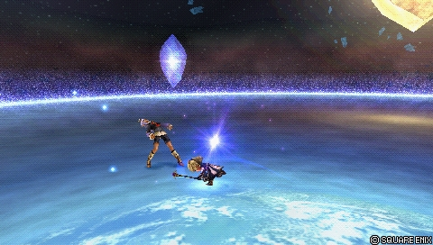
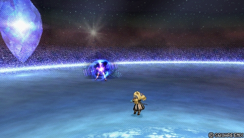
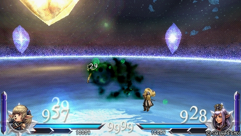
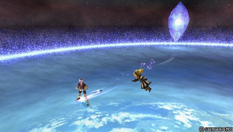
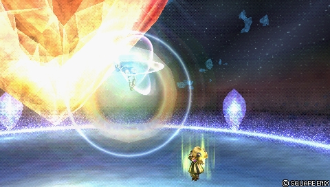

Final Fantasy XI
Shantotto
Mage à distance : presque chaque touche se convertit en dégâts HP
Position dans la méta
Tier B 23ᵉ sur 30 — tier list tournoi 2017 de dissidia.wiki (moitié valeurs de matchups, moitié avis de joueurs experts).
La page du wiki ne fournit pas de texte d'overview permettant de contextualiser ce classement.
Vue d'ensemble
Forces
- Excellente conversion : Shantotto transforme presque n'importe quel hit en dégâts HP avec un peu d'exécution, et prolonge de manière fiable avec les assists.
- Forte génération d'EX Force : toutes ses HP attacks et Retribution génèrent beaucoup d'EX, encore davantage avec des combos bien exécutés.
- Déni des HP attacks adverses : un adversaire empoisonné par Bio est instantanément break s'il touche Shantotto avec une HP attack ; loin de la défaite, cela le prive de fait de ses HP attacks pendant un temps.
- Bon jeu de whiff punish : bonne mobilité et startup de Stun pour comboter en HP attack ; quelques outils peu conventionnels rendent les whiffs imprudents dangereux face à elle.
Faiblesses
- Aucune HP attack à Wall Rush : cela ampute fortement les dégâts de combo potentiels et le rendement des sets à haute bravery de base qu'elle utilise habituellement.
- Vulnérabilité extrême à Glutton : toutes les HP attacks qu'elle utilise touchent à moyenne distance, donc l'adversaire est prioritaire pour absorber l'EX la plupart du temps, réduisant fortement son intake sans investissement de build.
- Vulnérabilité aux punish d'assist : Retribution couvre mal ses flancs et toutes ses autres attaques sont Ranged ; en pratique, presque chacune de ses attaques est punissable par une assist brute.
- Pas d'attaque melee aérienne rapide : elle est vulnérable à un grand nombre d'attaques et à la pression après une esquive.
- Recovery énorme : l'end lag de ses attaques est au-dessus de la moyenne du cast, et c'est particulièrement mauvais sur la plupart de ses HP attacks.
Stats & vitesses
| Nom | Shantotto (シャントット) |
|---|---|
| Jeu d'origine | Final Fantasy XI |
| ATK de base (LV100) | 112 (Very High) |
| DEF de base (LV100) | 109 (Lowest) |
| Vitesse de course | 6 (Average / Good) |
| Vitesse de dash | 77 (Average / Good) |
| Vitesse de chute | 97 (Slow) |
| Chute après esquive | 43 (Slow) |
| BRV la plus rapide | 13F (Stun) |
| HP la plus rapide | 49F (Spirit Magic: Earth / Spirit Magic: Air) |
| HP en 1 coup | No |
| HP links | Yes (Combos only) |
| Command block | No |
| Armes | Poles Rods Staves |
| Armures | Bangles Clothing Hairpins Hats Headbands Ribbons Robes |
| Armes exclusives | Jupiter's Staff Laevateinn Claustrum |
| Camp | Cosmos |
| Doubleur (JP) | Megumi Hayashibara |
| Doubleur (ENG) | Candi Milo |
Point or : ce personnage · petits points : le reste du cast · trait violet : moyenne. Valeurs du wiki, plus bas = plus rapide ; le rang à droite se lit directement (1ᵉʳ = le plus rapide).
Coups
Barre plus courte = coup plus rapide. Startup en frames (60 i/s, données dissidia.wiki), priorité indiquée après la valeur. Les coups marqués ★ sont les plus rapides du kit — ce sont en général vos meilleurs outils de punish et de pression.
Braveries
Au sol
A Couple Attacks Melee Low

Combo simple de trois coups de sceptre, Melee Low en 19 frames, avec un bond en avant sur le premier hit. Le troisième hit provoque un Wall Rush et projette l'adversaire loin à l'horizontale et à faible hauteur, l'empêchant d'utiliser l'aerial recovery.
| Dégâts de base | 7, 7, 16 (30) |
|---|---|
| Startup | 19F |
| Type | Physical |
| Priorité | Melee Low |
| EX Force | 30 |
| Effets | Wall Rush |
| Cancels | Dodge |
| CP (maîtrisé) | 30 (15) |
Stun Ranged Low
Coup spécial Ranged Low instantané (13 frames, sa bravery la plus rapide) sans dégâts : il annule l'attaque adverse. Une attaque différente libère l'adversaire. Existe au sol et en l'air, cancelable en esquive ou en attaque sur hit — c'est l'outil de whiff punish cité dans ses forces, qui combote en HP attack.
| Startup | 13F |
|---|---|
| Priorité | Ranged Low |
| EX Force | 0 |
| Cancels | Dodge, Attack (Hit) |
| CP (maîtrisé) | 30 (15) |
Bind Ranged Low

Coup spécial Ranged Low lent (65 frames) qui immobilise l'adversaire ; celui-ci est libéré dès qu'un autre coup le touche. Versions sol et air.
| Startup | 65F |
|---|---|
| Priorité | Ranged Low |
| EX Force | 0 |
| CP (maîtrisé) | 30 (15) |
Bio Ranged Low

Projectile Ranged Low (33 frames) : les ténèbres rongent l'adversaire et volent sa bravery en continu pendant une durée déterminée (4 x 11). Un adversaire empoisonné qui touche Shantotto avec une HP attack est instantanément break, ce qui permet de le dissuader d'en utiliser.
| Dégâts de base | 4 x 11 (44) |
|---|---|
| Startup | 33F |
| Type | Magical |
| Priorité | Ranged Low |
| EX Force | 0 |
| CP (maîtrisé) | 30 (15) |
En l’air
Retribution Melee Mid

Coup tournoyant à deux mains, Melee Mid en 41 frames, effet Chase et 90 d'EX Force — sa seule attaque melee aérienne et l'un de ses gros générateurs d'EX. Attention : elle couvre mal les flancs de Shantotto.
| Dégâts de base | 15, 15 (30) |
|---|---|
| Startup | 41F |
| Type | Physical |
| Priorité | Melee Mid |
| EX Force | 90 |
| Effets | Chase |
| Cancels | Dodge |
| CP (maîtrisé) | 30 (15) |
Stun Ranged Low

Coup spécial Ranged Low instantané (13 frames, sa bravery la plus rapide) sans dégâts : il annule l'attaque adverse. Une attaque différente libère l'adversaire. Existe au sol et en l'air, cancelable en esquive ou en attaque sur hit — c'est l'outil de whiff punish cité dans ses forces, qui combote en HP attack.
| Startup | 13F |
|---|---|
| Priorité | Ranged Low |
| EX Force | 0 |
| Cancels | Dodge, Attack (Hit) |
| CP (maîtrisé) | 30 (15) |
Bind Ranged Low
Coup spécial Ranged Low lent (65 frames) qui immobilise l'adversaire ; celui-ci est libéré dès qu'un autre coup le touche. Versions sol et air.
| Startup | 65F |
|---|---|
| Priorité | Ranged Low |
| EX Force | 0 |
| CP (maîtrisé) | 30 (15) |
Bio Ranged Low
Projectile Ranged Low (33 frames) : les ténèbres rongent l'adversaire et volent sa bravery en continu pendant une durée déterminée (4 x 11). Un adversaire empoisonné qui touche Shantotto avec une HP attack est instantanément break, ce qui permet de le dissuader d'en utiliser.
| Dégâts de base | 4 x 11 (44) |
|---|---|
| Startup | 33F |
| Type | Magical |
| Priorité | Ranged Low |
| EX Force | 0 |
| CP (maîtrisé) | 30 (15) |
Attaques HP
Au sol
Spirit Magic: Earth Ranged Mid
HP attack au sol à longue portée (49 frames, à égalité la plus rapide de ses HP attacks) : projette des rochers. La puissance dépend de la bravery — Stone (Ranged Mid), Stonega puis Quake (Ranged High), du plus faible au plus fort.
| Stone | Stonega | Quake | |
|---|---|---|---|
| Dégâts de base | 16 (8, 8) | 25 (5x5) | 30 (6x5) |
| Startup | 49F | 49F | 49F |
| Type | Magical | Magical | Magical |
| Priorité | Ranged Mid | Ranged High | Ranged High |
| EX Force | 24~36 (Chain hit) 60 (HP hit) | 24~36 (Chain hit) 60 (HP hit) | 24~36 (Chain hit) 60 (HP hit) |
| Cancels | Dodge | Dodge | Dodge |
| CP (maîtrisé) | 30 (15) |
Spirit Magic: Fire Ranged Mid
HP attack au sol à longue portée (57 à 61 frames) : sphère de flammes projetée vers l'avant. Trois paliers selon la bravery : Fire (Ranged Mid), Firaga et Flare (Ranged High).
| Fire | Firaga | Flare | |
|---|---|---|---|
| Dégâts de base | 12 (3 x 4) | 18 (3 x 6) | 24 (3 x 8) |
| Startup | 57F | 57F | 61F |
| Type | Magical | Magical | Magical |
| Priorité | Ranged Mid | Ranged High | Ranged High |
| EX Force | 24~36 (Chain hit) 60 (HP hit) | 24~36 (Chain hit) 60 (HP hit) | 24~36 (Chain hit) 60 (HP hit) |
| Cancels | Dodge | Dodge | Dodge |
| CP (maîtrisé) | 30 (15) |
Spirit Magic: Thunder Ranged Mid
HP attack au sol à mi-distance (67 à 71 frames) : foudre qui s'abat sur l'adversaire. Trois paliers selon la bravery : Thunder (Ranged Mid), Thundaga et Burst (Ranged High).
| Thunder | Thundaga | Burst | |
|---|---|---|---|
| Dégâts de base | 12 (3 x 4) | 16 (4 x 4) | 20 (4 x 5) |
| Startup | 67F | 71F | 71F |
| Type | Magical | Magical | Magical |
| Priorité | Ranged Mid | Ranged High | Ranged High |
| EX Force | 24~36 (Chain hit) 60 (HP hit) | 24~36 (Chain hit) 60 (HP hit) | 24~36 (Chain hit) 60 (HP hit) |
| Cancels | Dodge | Dodge | Dodge |
| CP (maîtrisé) | 30 (15) |
En l’air
Spirit Magic: Water Ranged Mid
HP attack aérienne à longue portée (59 frames) : submerge l'adversaire. Trois paliers selon la bravery : Water (Ranged Mid), Waterga et Flood (Ranged High).
| Water | Waterga | Flood | |
|---|---|---|---|
| Dégâts de base | 12 (3 x 4) | 16 (4 x 4) | 20 (5 x 4) |
| Startup | 59F | 59F | 59F |
| Type | Magical | Magical | Magical |
| Priorité | Ranged Mid | Ranged High | Ranged High |
| EX Force | 24~36 (Chain hit) 60 (HP hit) | 24~36 (Chain hit) 60 (HP hit) | 24~36 (Chain hit) 60 (HP hit) |
| Cancels | Dodge | Dodge | Dodge |
| CP (maîtrisé) | 30 (15) |
Spirit Magic: Air Ranged Mid
HP attack aérienne à longue portée (49 frames, sa HP attack aérienne la plus rapide) : vents violents. Trois paliers selon la bravery : Aero (Ranged Mid), Aeroga et Tornado (Ranged High).
| Aero | Aeroga | Tornado | |
|---|---|---|---|
| Dégâts de base | 10 (2 x 5) | 14 (2 x 7) | 18 (3 x 6) |
| Startup | 49F | 49F | 49F |
| Type | Magical | Magical | Magical |
| Priorité | Ranged Mid | Ranged High | Ranged High |
| EX Force | 24~36 (Chain hit) 60 (HP hit) | 24~36 (Chain hit) 60 (HP hit) | 24~36 (Chain hit) 60 (HP hit) |
| Cancels | Dodge | Dodge | Dodge |
| CP (maîtrisé) | 30 (15) |
Spirit Magic: Ice Ranged Mid
HP attack aérienne à longue portée (69 frames, la plus lente) : éclats de glace projetés vers l'avant. Trois paliers selon la bravery : Blizzard (Ranged Mid), Blizzaga et Freeze (Ranged High).
| Blizzard | Blizzaga | Freeze | |
|---|---|---|---|
| Dégâts de base | 10 (2 x 5) | 15 (3 x 5) | 20 (5 x 4) |
| Startup | 69F | 69F | 69F |
| Type | Magical | Magical | Magical |
| Priorité | Ranged Mid | Ranged High | Ranged High |
| EX Force | 24~36 (Chain hit) 60 (HP hit) | 24~36 (Chain hit) 60 (HP hit) | 24~36 (Chain hit) 60 (HP hit) |
| Cancels | Dodge | Dodge | Dodge |
| CP (maîtrisé) | 30 (15) |
EX Mode: Two-Hour Ability! & EX Burst
L'EX Mode « Two-Hour Ability! » confère Regen, Critical Boost et Manafont : tant que l'EX Mode est actif, la bravery de Shantotto est instantanément reconstituée après chaque HP attack réussie.
EX Burst : « Play Rough » : sélectionner les sorts dans un menu dédié, dans l'ordre Flare > Flood > Burst > Quake > Tornado > Freeze (chaque sort demande deux appuis de croix, environ 5 secondes au total ; seule la position de Flare est mélangée, la suite est toujours sort > bas > sort > bas). Bons dégâts, voire au-dessus de la moyenne — sans scaling sur la santé comme Cloud ou Tidus, mais loin du burst le plus faible du jeu. Auto EX Command Ω trivialise la saisie.
Mécanique unique
Plan de jeu & techniques avancées
Les sources ne fournissent pas d'overview rédigée, mais le tableau forces/faiblesses dessine le plan de jeu : convertir presque n'importe quel hit en dégâts HP avec un peu d'exécution, puis prolonger avec les assists. Stun, instantanée à 13 frames, sert de pivot au whiff punish en combotant vers les Spirit Magic ; toutes ses HP attacks et Retribution génèrent beaucoup d'EX Force, qui s'accumule d'autant plus que les combos sont bien exécutés.
Bio ajoute un levier de contrôle unique : un adversaire empoisonné est instantanément break s'il touche Shantotto avec une HP attack, ce qui permet, hors situation de match point, de le priver de ses HP attacks pendant une période. En contrepartie, il faut composer avec l'absence de Wall Rush sur ses HP attacks, une recovery énorme, la vulnérabilité de presque toutes ses attaques aux punish d'assist et une forte exposition à Glutton sur l'absorption d'EX à moyenne distance.
Techniques universelles (blodge, dash feint, lock off, dodge punishment) : voir la page Techniques & glitches.
Matchups
Vidéos de matchs : Replay Theater — matchs de Shantotto.
Builds
Le build hybride documenté s'appuie sur l'Equip Glitch (le coût total en CP le suppose réalisé) et sur l'extra ability Best Dresser pour +100 de bravery de base — cohérent avec les sets à haute bravery de base qu'elle utilise habituellement (1444 BRV ici). Il associe l'assist Yuna, l'arme Heaven's Cloud, Hero's Shield, Thornlet et Maximillian, avec des accessoires orientés boosters (Dismay Shock, Battle Hammer, BRV = 0, Summon Unused, Blue Gem, Tenacious Attacker, Glutton, First to Victory, Hero's Seal, Miracle Shoes) et Rubicante en summon.
| Stats | |
|---|---|
| HP | 10478 |
| CP | 450 |
| BRV | 1444 |
| ATK | 179 |
| DEF | 181 |
| LUK | 61 |
| Max Booster | x1.8 |
| Equipment | |
|---|---|
| Assist | Yuna |
| Weapon | Heaven's Cloud |
| Hand | Hero's Shield |
| Head | Thornlet |
| Body | Maximillian |
| Accessory 1 | Dismay Shock |
| Accessory 2 | Battle Hammer |
| Accessory 3 | BRV = 0 |
| Accessory 4 | Summon Unused |
| Accessory 5 | Blue Gem |
| Accessory 6 | Tenacious Attacker |
| Accessory 7 | Glutton |
| Accessory 8 | First to Victory |
| Accessory 9 | Hero's Seal |
| Accessory 10 | Miracle Shoes |
| Summon | Rubicante |
| Bravery attacks | |
|---|---|
| Ground | Aerial |
| HP attacks | |
| Ground | Aerial |
| Stats |
|---|
| Equipment |
|---|
| Bravery attacks | |
|---|---|
| Ground | Aerial |
| HP attacks | |
| Ground | Aerial |
Les emplacements de braveries et de HP attacks du build ne sont pas renseignés dans les données, et le second build (« Build #2 ») est un gabarit vide.
Synergies d'assist
Shantotto en tant qu'assist
En tant qu'assist, Shantotto est classée seule dans le tier Bottom de la tier list assist de Muggshotter — le pire classement du roster. Les sources de sa page ne détaillent pas davantage son usage en assist.
Assists recommandées
- Kuja — La page indique simplement que Shantotto fonctionne bien avec les assists Kuja, Yuna et Jecht, sans détailler.
- Yuna — Citée parmi les assists qui fonctionnent bien avec elle ; c'est aussi l'assist retenue dans le build hybride documenté.
- Jecht — Cité parmi les assists qui fonctionnent bien avec elle, sans plus de détail dans les sources.
Tech communautaire
Sources
- https://dissidia.wiki/Shantotto_(Dissidia_012)
- https://dissidia.wiki/Tier_List_(Dissidia_012)
- https://dissidia.wiki/Tier_List_(Assist)
Limites connues
- Pas de texte d'overview sur la page (seul le tableau forces/faiblesses est renseigné) : champ overview laissé à null et gameplan reconstruit uniquement depuis ce tableau.
- La page matchups du wiki est un stub et aucune information de matchup n'apparaît ailleurs : champ matchups laissé à null.
- Aucune section combos renseignée (sous-section Solo vide) malgré la conversion présentée comme sa force principale.
- Notes d'usage détaillées absentes pour la plupart des coups (Stun, Bind, Bio, Retribution et les six Spirit Magic n'ont que la description du jeu et les frame data) ; la note d'A Couple Attacks est tronquée dans les données sources.
- Aucune technique avancée spécifique nommée dans les sources : advancedTech laissé à null.
- Pas de section « Unique Mechanics » documentée : champ laissé à null.
- Section assist non documentée au-delà d'une phrase ; valeurs d'assist gain absentes des tableaux de coups ; section References vide : communityTech laissé vide.